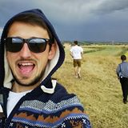

I am an outgoing and energetic young professional.
- Education
-
Aalborg Universitet Esbjerg, Denmark
Dates: September 2012 – onwards
Major: Medialogy Msc.
-
Technical University of Cluj-Napoca
Dates: October 2007 – June 2011, October 2011 – June 2012
Major: Computer Science Bsc. English department, Software Engineering Msc.
Title awarded: Computer Science Engineer
- Experience
-
BirthdayAlarm FrontEnd Developer, 2013 - present
CheckYeti FrontEnd Developer, 2015 - 2018
3Pillar Global Software Developer, 2010 - 2012
- Mobile Website for the PBS Video Portal (American public broadcasting television). Consisted of Python and Django framework with HTML and CSS frontend. Development tasks, bug fixing covering different parts of the application and also some QA tasks. All of them involved work on both the server and client side.
- Liferay CMS based website for LogicTree. Developer tasks like: creating portlets using Jsp and Javascript (& JQuery), managing existing Grails services consumed by the server-side, bug fixing covering different parts of the application.
- Java server with a Flex client used for multiple data visualizations for Centrifuge (graphs, tables, charts, timeline). Development tasks, bug fixing covering different parts of the application and also some QA tasks. All of them involved work on both the server and client side.
Telvent DMS Practice Internship - Novi Sad, Serbia - 2010
- Design a Silverlight Business Application (Silverlight4 using RIA services) in Visual Studio 2010 covering all the main stages: from database communication, security, user controls to design and basic animation.
- Skills
-
Technical skills
FrontEnd: React, Redux, Webpack, Yarn
BackEnd: Python, Java
Computer skills
Photoshop, Sketch, Linux, Windows, OSX
Projects
- A desktop peer-2-peer application for multiple file sharing based on the bit-torrent protocol.
- Java based application which translates hand gestures from a webcam to operations on documents.
- Participated in the Microsoft Imagine Cup Competition:
- In 2011 won second and third place at the local qualification round with 2 different projects.
- In 2012 reached the 100 apps from 2400 entered in the Windows Phone Challenge Competition.
- Participated in AIESEC ITChallenge Competition:
- In 2009 won third place with a .NET based application that matches users based on their profiles.
- In 2010 won first place with a Java based application that translates sign language from a webcam.
- Hobbies
- Basketball, movies, music, reading, snowboarding.
- References
- LinkedIn: http://lnkd.in/y5hBah